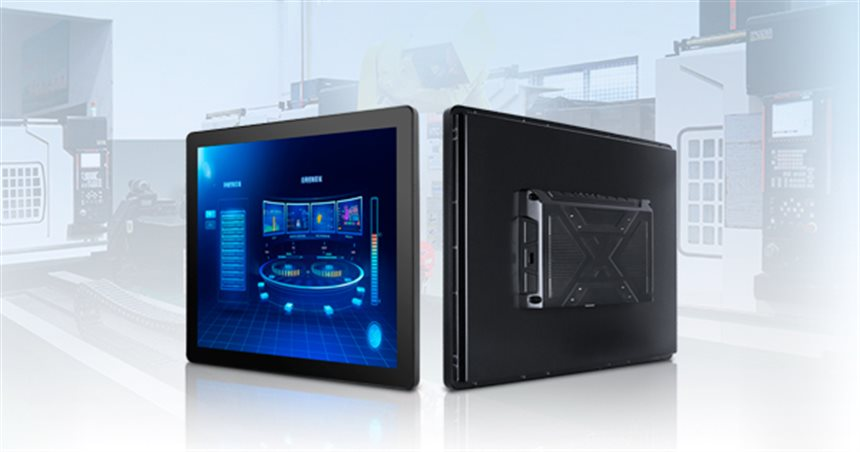

PANEL COMPUTER
Industrial Panel PC
Black-bezel industrial panel PC depicted running a machine HMI dashboard, with a black aluminium rear housing and an X-braced mounting frame.
This is a black all-in-one panel computer: a touch display behind a dark front bezel, with the computing module and cabling tucked into a black aluminium rear housing. The rear view shows the X-braced mounting frame with VESA holes and a side cable junction, which is how the unit is fixed to a machine frame or an arm. The dashboard on screen in the photo is a rendering to show the display format — the interface itself comes from your own HMI software, so the panel is specified around your application rather than ours.
Interfaces on this unit
Interfaces listed below are the ones visible on the reference photos. Port counts and levels for your build are confirmed in the specification review.
- Dark-bezel touch display
- Rear aluminium housing with X-braced mount
- VESA holes on the mounting frame
- Side cable junction and gland
- Wi-Fi antenna connector at the rear
- USB service port inside the junction box
Configuration options
Points to agree before a quotation. Final availability, interfaces and ratings depend on the selected platform.
- Screen size and 4:3 or wide aspect ratio
- Projected capacitive or resistive touch
- Brightness, anti-glare treatment and optical bonding
- Front panel ingress protection rating
- VESA arm, panel cut-out or X-brace mounting
- Windows, Android or Linux platform image
Typical applications
01
Machine-side HMI on production equipment
02
Control and monitoring panel in a cabinet door
03
Shop-floor dashboard display
04
Operator terminal at a test station
Before you request a quotation
Which screen size and aspect ratio does your HMI expect?
Share the answer together with the installation environment, quantity and target schedule so the configuration can be assessed.
Will operators wear gloves or use a stylus?
Share the answer together with the installation environment, quantity and target schedule so the configuration can be assessed.
What ingress protection does the front panel need?
Share the answer together with the installation environment, quantity and target schedule so the configuration can be assessed.
How is the panel mounted: arm, cut-out or bracket?
Share the answer together with the installation environment, quantity and target schedule so the configuration can be assessed.
Discuss your project
Tell us the application, environment and I/O requirements. We reply with the questions that still need answers and the next step.
Kiosks using this platform
Terminals from our build range that typically run on a computing unit of this class.